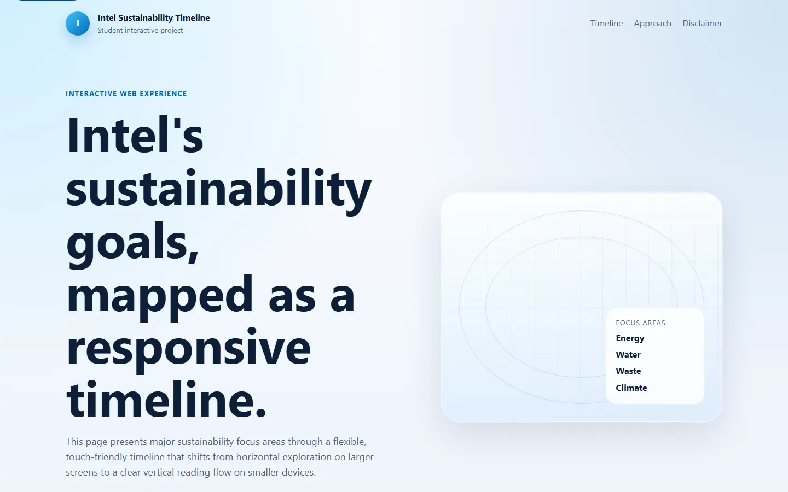
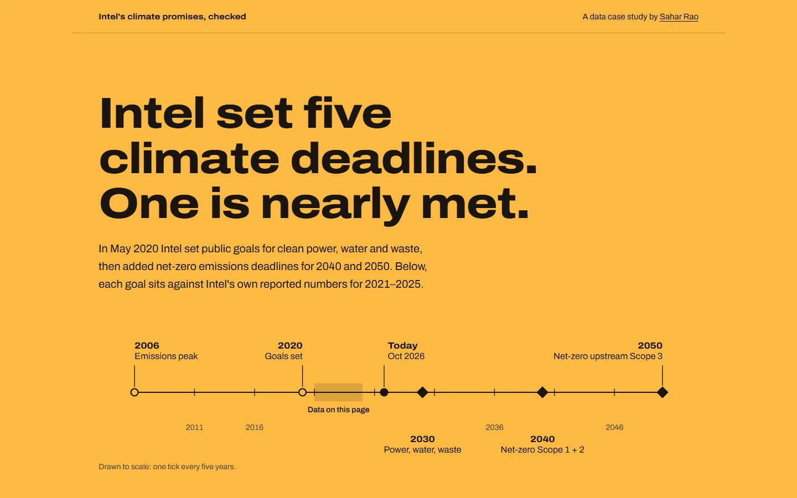
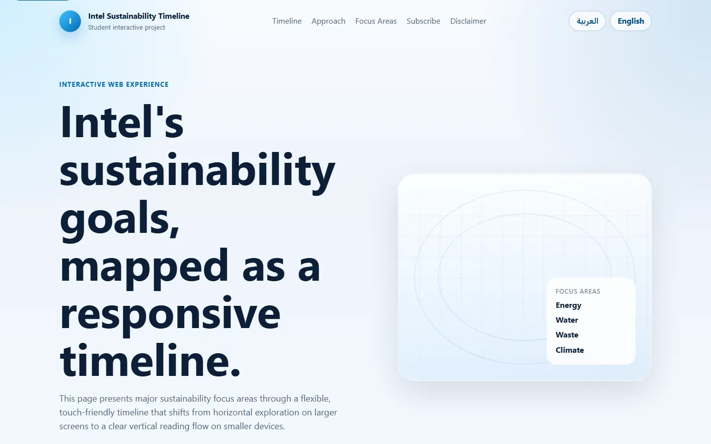
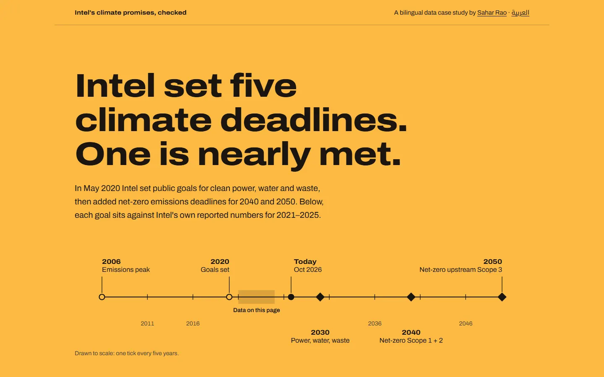
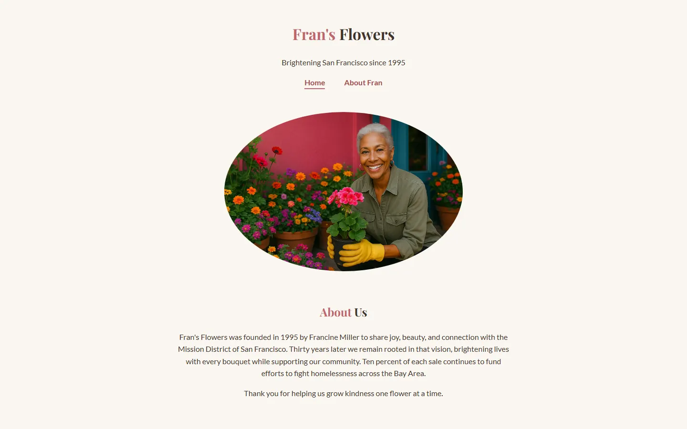
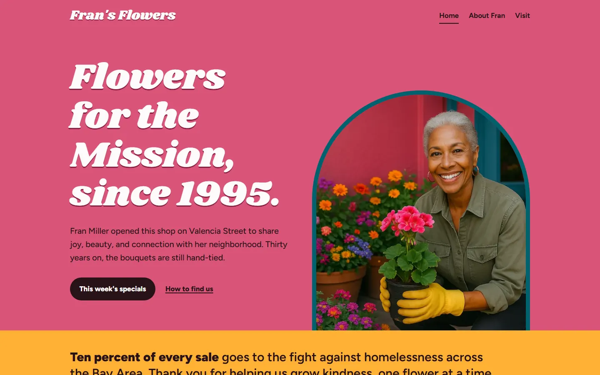
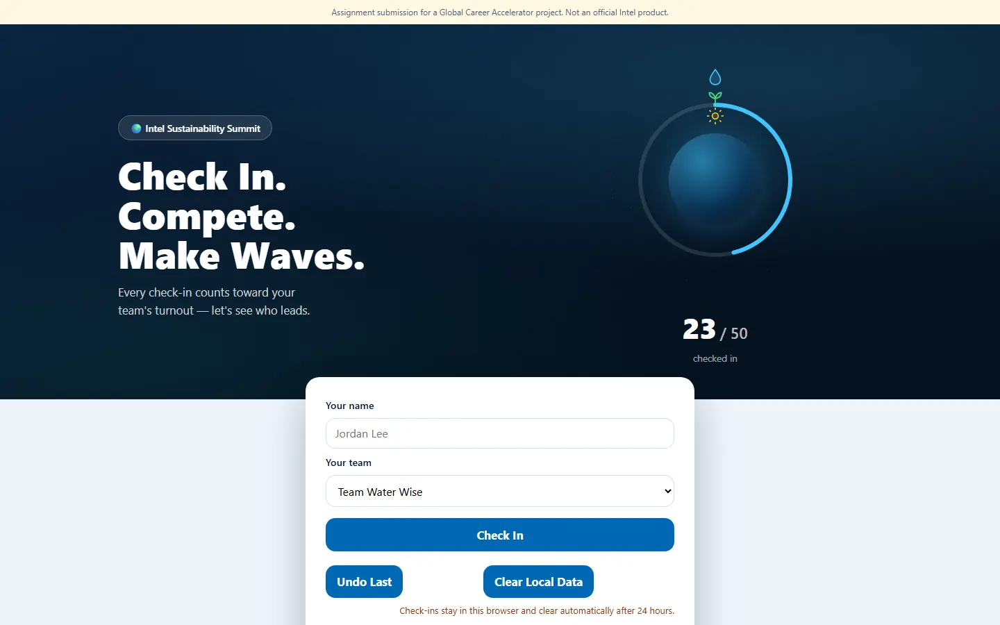
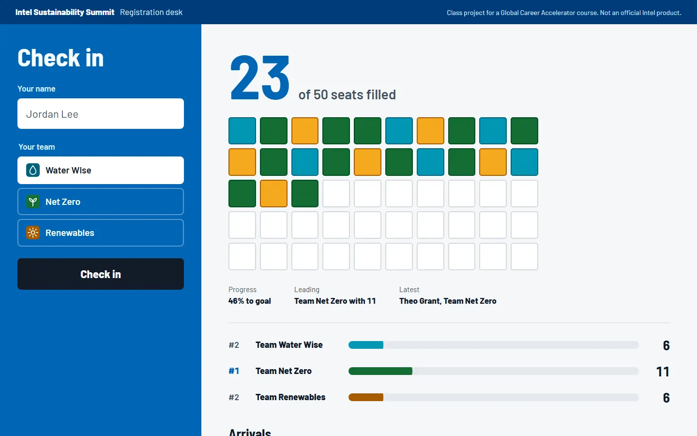

Baseline. Intervention. Result.
I'm Sahar Rao, a neuroscience student at UC Riverside. I rebuilt four of my graded web-design projects and kept every original, so each figure below is a before and after you can check for yourself: panel a as graded, panel b revised.


Fig. 1 Intel's climate goals, checked
- Baseline. A generic timeline of "focus areas" with no numbers in it.
- Intervention. Rebuilt as a data story: Intel's five public deadlines set against Intel's own 2021–2025 figures, with one plain status per goal.
- Result. Every figure traces to page 9 of Intel's 2025–26 report. Charts are drawn from tables that stay readable without JavaScript. Codex reviewed it, and I applied its 4 fixes.


Fig. 2 The same story, in Arabic
- Baseline. "Localization" meant a Google Translate widget, plus a newsletter form that sent nowhere.
- Intervention. A hand-written Modern Standard Arabic edition. The timeline and charts are mirrored to read right to left, without breaking how numbers and percent signs display.
- Result. Codex checked all 133 numbers against the English page and suggested 7 wording fixes, all applied. Not yet reviewed by a native speaker, and the page says so.


Fig. 3 Fran's Flowers
- Baseline. A centered template for a fictional Mission District florist: an oval photo and soft default colors.
- Intervention. An identity taken from the shop's own photo: the pink stucco wall, the teal door, the marigold pots. Specials hang as price tags in a shop window.
- Result. Codex caught four details the brief never stated, and I removed them. The class was "No AI", so the graded version stays untouched at its tag.


Fig. 4 A check-in desk for a summit
- Baseline. A glowing orb and identical cards. The form sat below the fold, and the scores were hard to read from across a table.
- Intervention. A registration-desk scoreboard: 50 seats fill in team colors in arrival order. One-tap team tiles, plus staff tools for undoing a mistake.
- Result. The original logic and its self-test were kept, and a scripted run of 23 check-ins passed at phone and desktop widths. An independent review is still pending.
Method
Each revision ran the same protocol, in this order.
- Freeze the baseline. The graded version is tagged in git before anything changes, so panel a is always recoverable.
- Write the brief. Who uses the page, what they need from it, and which facts must stay true.
- Replace filler with sources. Numbers come from the primary document, cited down to the page.
- Measure. Rendered and checked in a real browser at 320, 390 and 1440 px, with reduced motion on and off, and no console errors.
- Review independently. A second model audits the work read-only, and I apply its fixes or record why not.
These revisions were built with AI assistance (Claude Code, with Codex as reviewer). The judgment calls, the sources and what shipped are mine to answer for.